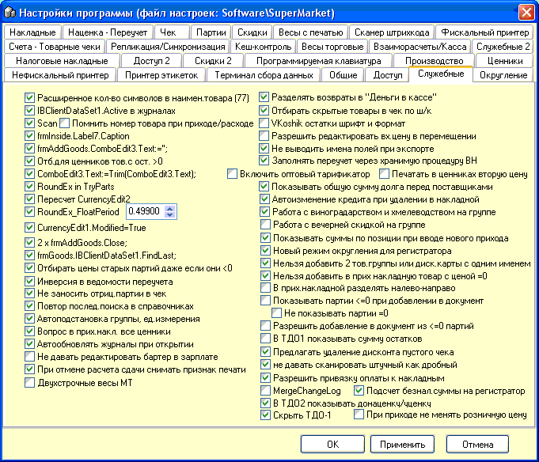

Служебные опции служат
для более тонкой настройки программного обеспечения, по вопросам их
применения консультируйтесь с вашим сервисным специалистом.
Служебные 2 - заблокированная вкладка по
умолчанию, для доступа к ней нажмите Alt+F10.
Первые 4 опции служат для контроля целостности
связей между документами, чтобы нельзя было удалить позицию, участвующую в
других документах.
В форме проверки цен остатков отображать
количество изначально оприходованного в данную партию товара - значение ясно
из названия (см.подробнее остатки через F2).
Разрешить загрузку списка штрихкодов в переучет
из файла Inventory.txt - ручная загрузка файла. Применяется, если нет
терминала сбора данных, а переучет собирался, например, смартфоном или
планшетом.
В журнале переучетов не показывать переучеты по
скрытым группам - значение ясно из названия.
Разрешить изменение розничной цены в чеке
вручную (товарно-денежный отчет будет испорчен) - не используйте если не
понимаете, что делаете. Используется в редких случаях, когда уже
требуется на новой дополнительной торговой точке срочно установить программу с
базой другой точки, где цены не соответствуют действительности и в ближайшее
время планируется проводить переучет и очистку базы данных.
Каталог (можно сетевой) для каталого с
изображениями товара - для того чтобы в справочнике товара через F6 можно было
просмотреть изображения выбранного товара укажите путь к папке \Pics, в
котором должны быть JPG файлы с названиями равными кодам товаров, например,
для товара №7. файлы могут называться 7-1.jpg, 7-2.jpg и так далее.
Примечание! сам каталог \Pics не указывайте в строке пути, программа
добавит его автоматически.
Быстрое закрытие программы (предварительно
протестируйте) - под некоторыми сборками Windows программа выгружается дольше
чем обычно, используйте эту опцию, если хотите ускорить выгрузку, но
предварительно проверьте, что при этом все настройки сохраняются верно и
подключенное оборудование (сканеры, принтеры) правильно переподключается при
новом входе в программу.